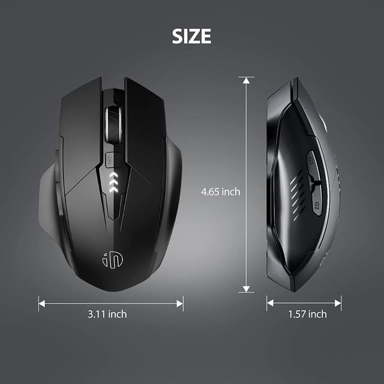
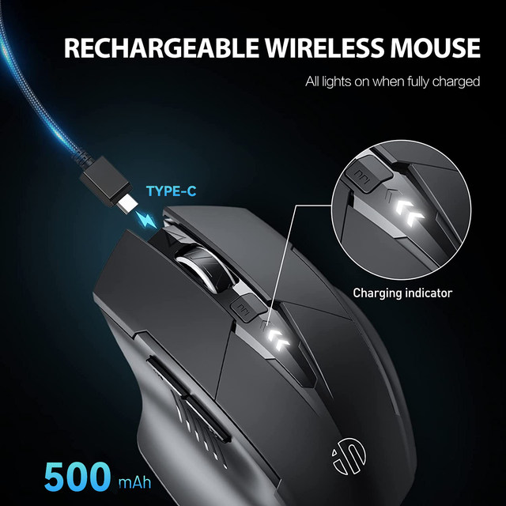
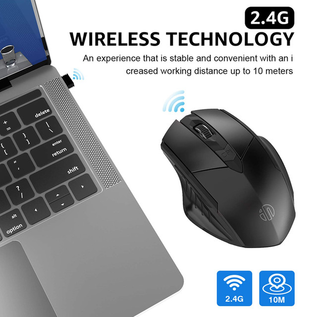
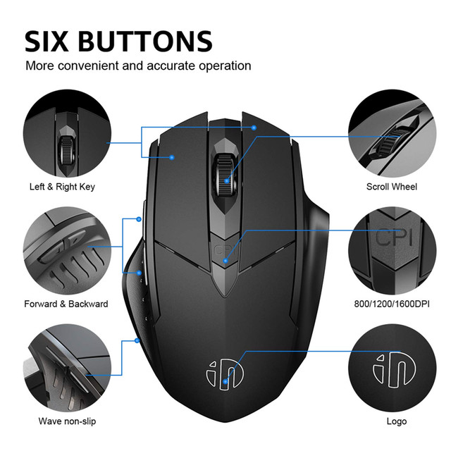
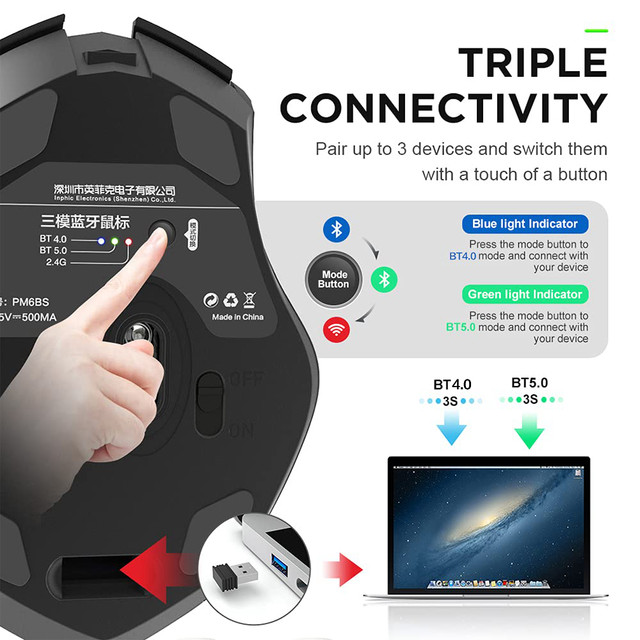
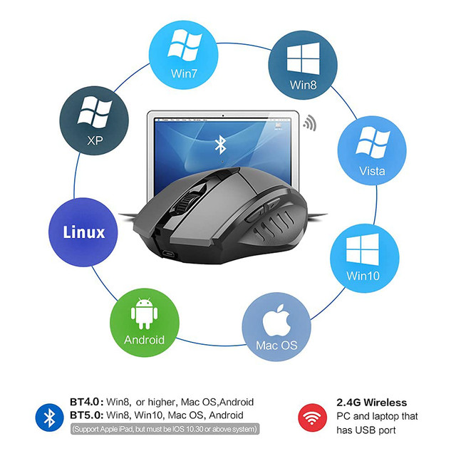
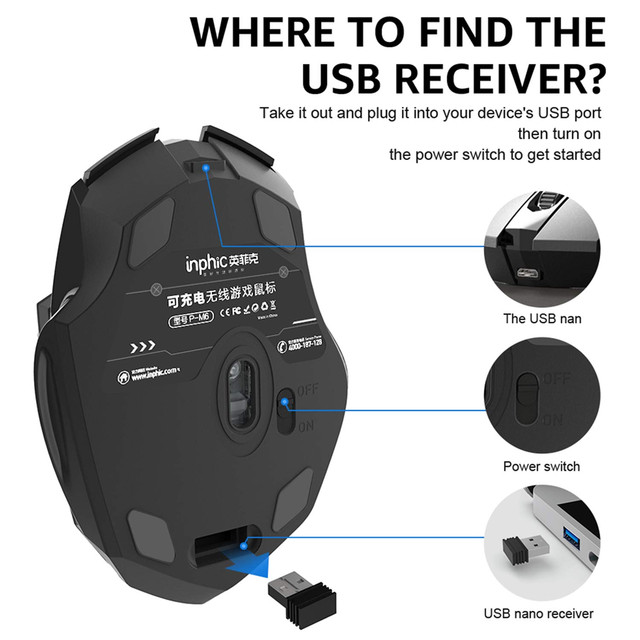
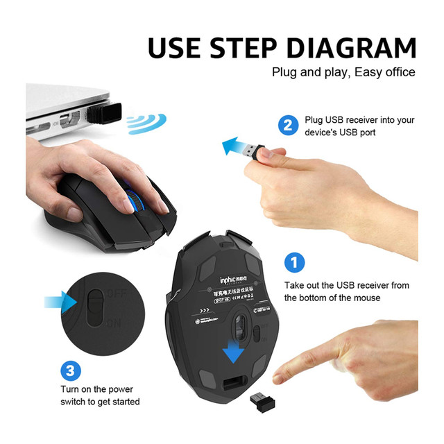
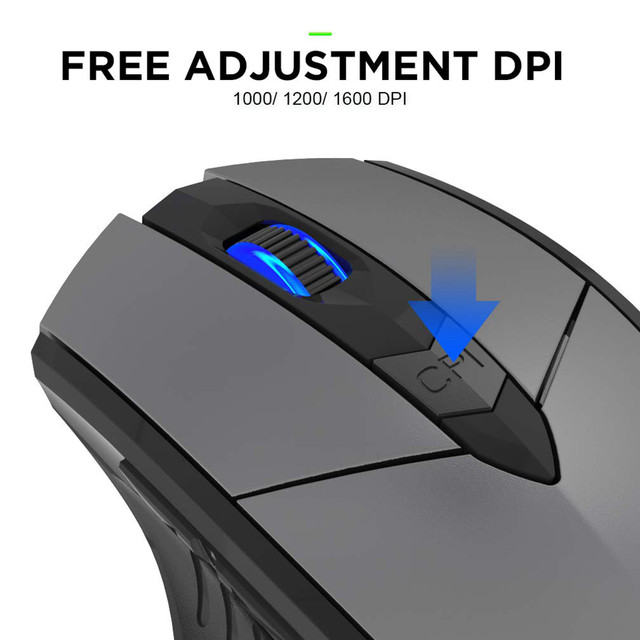
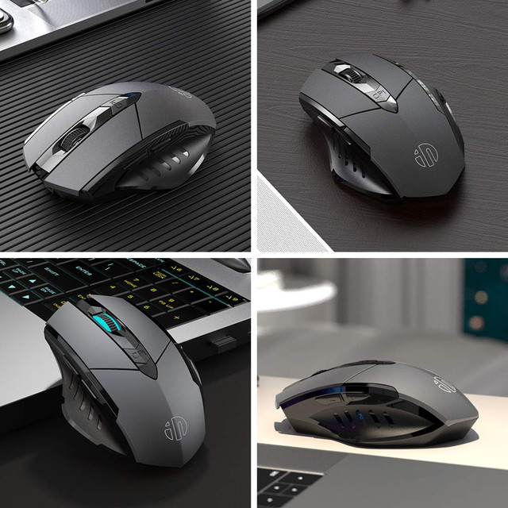

Bluetooth pairing methods and tutorials
Bluetooth Black mouse connection video: https://cloud.video.taobao.com//play/u/843421904/p/1/e/6/t/1/286841436434.mp4
Bluetooth Black Mode Switching Tutorial https://cloud.video.taobao.com//play/u/843421904/p/1/e/6/t/1/287662839721.mp4
2.4G Wireless mouse code matching method:
Firstly, make sure to set the mode to 2.4G when connecting to 2.4G
Remove the mouse receiver and place it aside (do not insert it into the computer), turn on the bottom switch of the mouse to ON, while holding down the left mouse button, scroll wheel button, and right mouse button. After 5-7 seconds, plug the mouse receiver back into the computer and complete the operation
First, press and hold the mode key to switch to the corresponding Bluetooth mode, then press and hold the mode key. The mode light will flash quickly, and then release it to enter pairing mode. Then, open the computer's Bluetooth to search for pairing
Features of our product:
1) Rechargeable Wireless Mouse. Built-in 500mAh high quality rechargeable battery. When you leave your mouse more than 5 minutes, it will automatically get into sleep mode which saves electricity of the mouse, and click any button for waking up the mouse again (P.S. Please recharge for 1 hour when the mouse is new before use)
2) Silent Click. Silent clicking design for left and right button fits the circumstance for using the mouse in public, such as library, dormitory, office and so on, and apart from blue light indication during recharging and light off after full recharge, this design results worry-free for disturbing others.
3) 2.4GHz USB Mouse. Stable connection up to 10-meter working distance and just simply incert the USB. Three adjustable DPI (1000/1200/1600) for freely controlling mouse speed.Tri-Mode:BT 5.0/4.0+2.4Ghz
4) 6 High Effecient Buttons. There are not only left and right buttons (silent click), but also DPI adjusting button, scroll wheel and two side buttons. The function of the side buttons is helping you to back or forward when you browse website, which is more convenient for you.
Specification:
Tri-Mode:BT 5.0/4.0+2.4Ghz
Product model: PM-6 mouse
Connection method: wireless + Bluetooth
Resolution: 1000/1200/1600DPI
Wireless working channel: 16 automatic frequency hopping
Rated working current: <10mA
Built-in working voltage: 3.7V
Charging input: 5V 500mA
Tracking system: optical
Wireless carrier frequency: 2402-2480MHz
Operating system: compatible with all systems
Package includes:
1 * PM-6 wireless mouse
1 * charging cable









